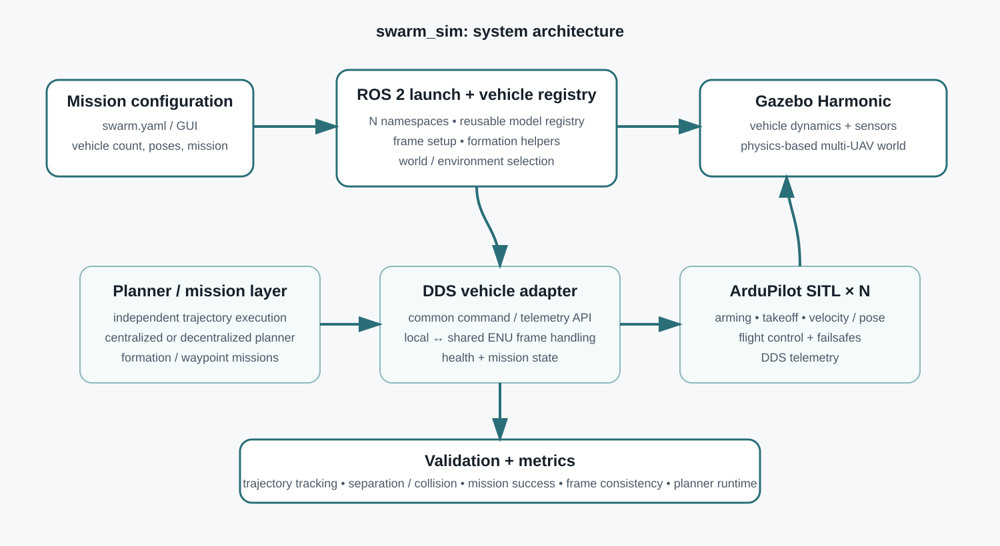

Selected project
Multi-Drone Simulation and Task Allocation
A reusable multi-UAV simulation and autonomy stack built to make fleet-scale experiments repeatable: configure the swarm once, launch N ArduPilot vehicles, execute formation or trajectory missions, and evaluate planning and safety independently of the flight controller.
Problem
Multi-robot algorithms are easy to prototype in isolation but much harder to validate once vehicle dynamics, coordinate frames, autopilot state machines and asynchronous telemetry are introduced. The goal of this project is to provide a common physics-based environment in which formation control, task allocation and path-planning algorithms can be tested without rebuilding the vehicle interface for every experiment.
What I built
Reusable swarm launcher
A YAML-driven interface describes vehicle count, spawn poses, worlds and mission configuration. The launch layer creates isolated namespaces and brings up the matching Gazebo and ArduPilot SITL instances.
DDS vehicle adapter
A common ROS 2 interface handles arming, takeoff, state/pose telemetry and vehicle commands while hiding per-vehicle topic details from higher-level planners.
Trajectory execution
Independent trajectory execution converts planner outputs into synchronized vehicle commands and lets planning algorithms be evaluated without coupling them to low-level flight-control logic.
Planning benchmark
The stack is structured to compare centralized and decentralized planning using the same worlds, vehicle model and validation metrics. Earlier benchmarking covered A*, RRT*, BiRRT* and PRM.
System architecture

Frame and timing considerations
Each vehicle exposes local telemetry through ArduPilot. The simulation layer aligns this with a shared ENU frame so planners reason about all robots in one metric coordinate system. Mission execution does not assume perfectly synchronous hardware clocks; synchronization is used at the planner/executor boundary to produce coherent formations, while every vehicle continues to close its own control loop independently.
Validation
- Validated multi-vehicle arming, takeoff, formation motion and landing through ROS 2 DDS interfaces.
- Executed square-formation and multi-waypoint missions with multiple simulated vehicles in Gazebo Harmonic.
- Separated planner success from execution success using independent checks for mission completion, trajectory tracking, frame consistency and inter-vehicle safety.
- Task-allocation work used CBBA with APF-based collision avoidance, dynamic re-tasking and battery-aware return-to-base, reaching 100% conflict-free completion in the evaluated scenarios.
Mission demos
The repository for the underlying framework does not need to be public. These mission videos are enough to show the behaviour, architecture and validation flow.

Stack
Source availability: system architecture and demos are presented here; source code can remain private.